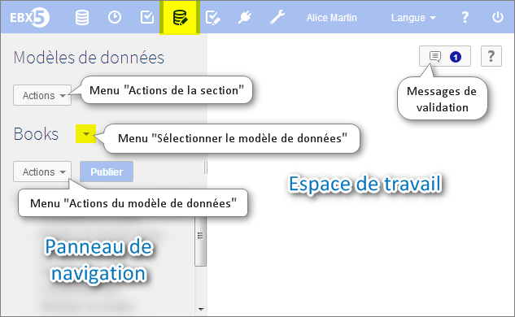

Utilisation de l'interface utilisateur de la section Modèles de Données
Contenu de la section
Navigation dans le Data Model Assistant
Les modèles de données peuvent être importés, édités, et publiés dans la section Modélisation > Modèles de données. Le Data Model Assistant de EBX5 aide le développement des modèles de données.

Le panneau de navigation est organisé selon les sections suivantes :
Configuration | La configuration technique du modèle de données. |
Modèle de données inclus | Les modèles de données inclus dans le modèle courant. Les types de données définis dans les modèles inclus peuvent être réutilisés dans le modèle de données courant. |
Structure de données | Structure du modèle de données. Définit les relations entre les éléments du modèle de données et permet d'accéder à la définition de chaque élément. |
Types de données simples | Types simples réutilisables définis dans le modèle de données courant. |
Types de données complexes | Types complexes réutilisables définis dans le modèle de données courant. |
Types de données simples inclus | Types simples réutilisables définis dans un modèle de données inclus dans le modèle courant. |
Types de données complexes inclus | Types complexes réutilisables définis dans un modèle de données inclus dans le modèle courant. |
Icônes des éléments du modèle de données


Voir aussi :
 Sommaire du guide utilisateur
Sommaire du guide utilisateur